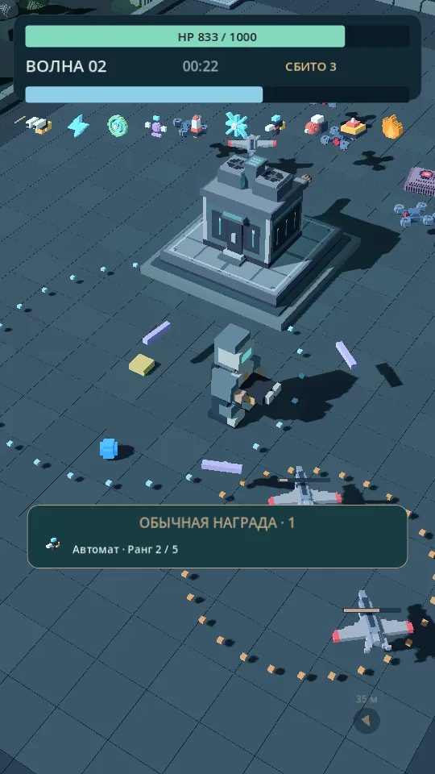
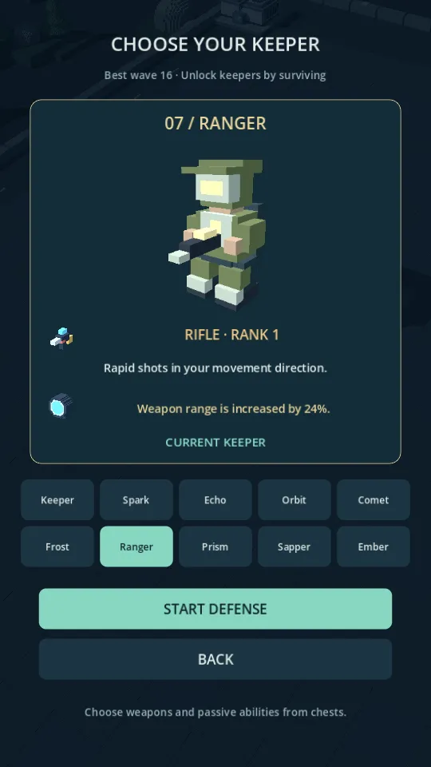
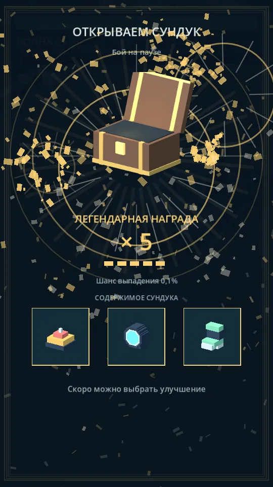

Твоя база.
Твоя сборка.
Следующая волна.
Защищай дата-центр от дронов. Выбирай героя, собирай оружие и находи сочетания улучшений, которые помогут продержаться дольше.
Попасть в whitelist ↗ Мир Wardrones DC · промоарт
Мир Wardrones DC · промоартКаждая волна -
новая проверка.
Двигайся, собирай опыт и усиливай героя.
Когда бой становится сложнее, решает твоя сборка.

Продержись ещё волну
Следи за противниками и находи место для манёвра.

Найди своего героя
Выбери оружие и способности под свой стиль игры.

Собери свою комбинацию
Открывай сундуки и выбирай, чем усилить героя.
Будь среди тех,
кто ждёт первую волну.
Добавь себя в список ожидания и следи за новостями игры. Мы рассказываем о разработке в Telegram.
Открыть Wardrones DC Bot ↗- 01
Открой бота
Перейди в Wardrones DC Bot по кнопке.
- 02
Нажми Start
Бот добавит твой Telegram ID, username и имя в whitelist.
- 03
Следи за игрой
Подпишись на канал @wardronesdc. Там публикуем новости и игровые кадры.
Перед стартом
Что такое whitelist?
Это список тех, кто ждёт Wardrones DC. Запись в него помогает нам видеть интерес к игре. Она не гарантирует дату релиза или доступ к тестированию.
Когда можно будет поиграть?
Игра находится в разработке. Дату релиза и доступные платформы объявим в Telegram-канале.
Какие данные сохраняет бот?
Telegram ID, username и имя из профиля. Они нужны для списка ожидания. По вопросам удаления данных можно написать @pounce00x.
Где смотреть новые игровые кадры?
В канале Wardrones DC. Показываем игру и рассказываем, что изменилось.